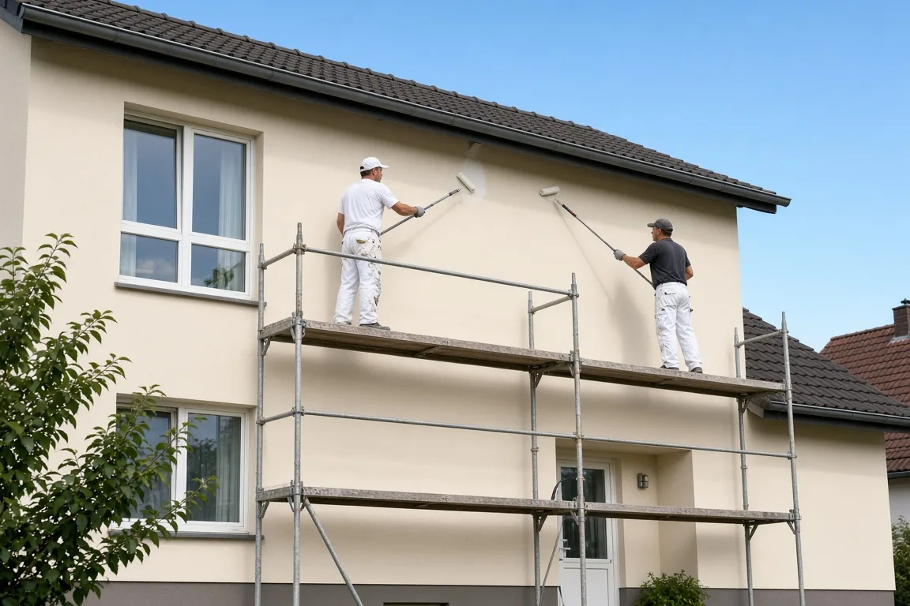
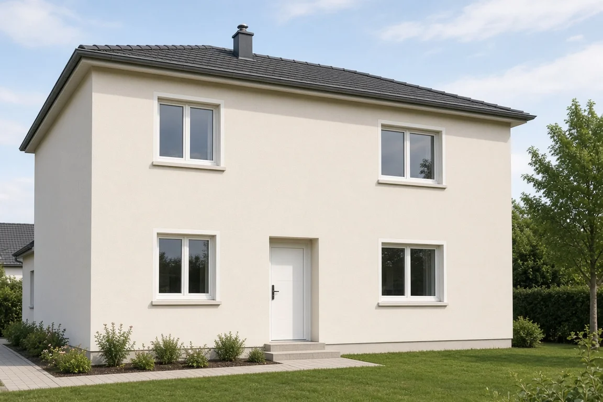

Ihr Malerbetrieb in Siegen
Seit 1997 für Fassade, Dämmung und Außenputz.
Jetzt anrufen: (0271) 35 67 90 Kontakt und AnfahrtDas erledigen wir für Sie
Fassadenanstrich
Die Fassade soll wieder ordentlich aussehen? Wir streichen sie neu.
Gerüstbau
Das Gerüst stellen wir selbst, Sie brauchen keine zweite Firma.
Wärmedämmsysteme
Sie möchten Ihr Haus dämmen? Wir bringen das Dämmsystem an.
Sanierung gerissener Fassaden
Sie sehen Risse in der Fassade? Wir bessern sie aus.
Maler- und Lackierarbeiten im Außenbereich
Alles, was außen gestrichen oder lackiert werden muss, übernehmen wir.
Dachbeschichtungen
Das Dach soll eine neue Schicht bekommen? Das erledigen wir.
Außenputz
Die Außenwand braucht neuen Putz? Wir bringen ihn auf.
Malerarbeiten im Innenbereich
Draußen ist es zu kalt? In den Wintermonaten streichen wir Ihre Innenräume.
Über uns
Geschäftsführer Meik Utsch hat die Firma gegründet, die Familie Utsch ist seit 1981 selbstständig. Wir arbeiten an Ein- und Mehrfamilienhäusern sowie an Industrie- und anderen Großobjekten.

So erreichen Sie uns
Oberschelder Straße 2
57080 Siegen
Telefon: (0271) 35 67 90
E-Mail: info@maler-utsch.de
Telefonzeiten: Ihre Telefonzeiten tragen wir gemeinsam ein.
